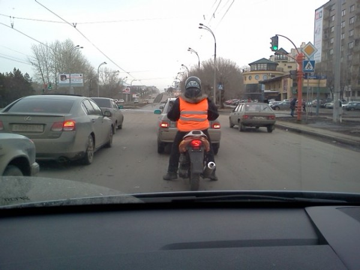

Обычно слово «мотоциклист» не употребляется одновременно со словом «безопасность». К сожалению в противостоянии мотоцикла и автомобиля победителем всегда выходит автомобиль. Скорость мотоцикла выше чем у машины, а размеры меньше. В большинстве ДТП с участием мотоциклов водители автомобилей просто не успевают заметить тех кто передвигается на двух колесах.
Сегодня на проспекте Ленина в Кемерово встретил правда не мотоциклиста, а скутериста или не знаю как там.
На скутере был включен ближний свет, сам водитель был в шлеме. В хорошем таком шлеме. Поверх куртки на нем был надет яркий оранжевый жилет.

Разумеется это не так гламурно, как просто кожаная куртка. Но в случае чего родные и близкие мало думают о гламуре. Кстати ярко-зеленая жилетка как у сотрудников ГИБДД не только обратит на себя внимание, но и заставит подсознание водителей объезжать вас подальше.